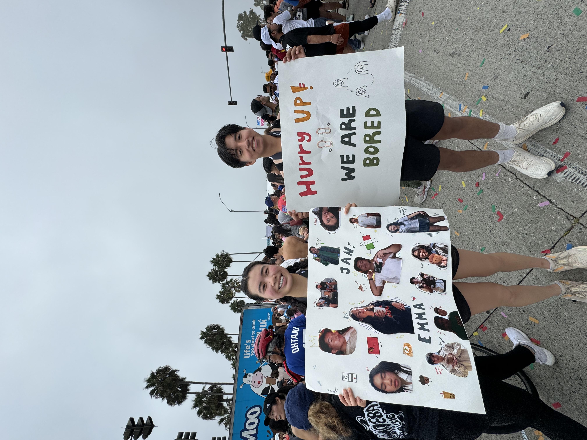
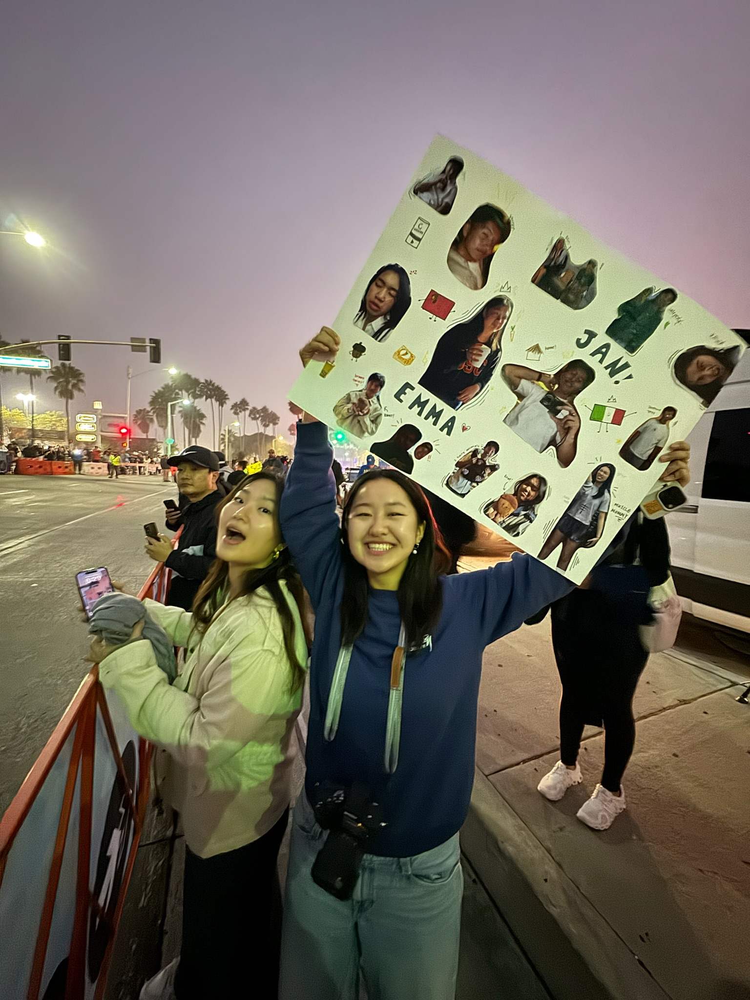
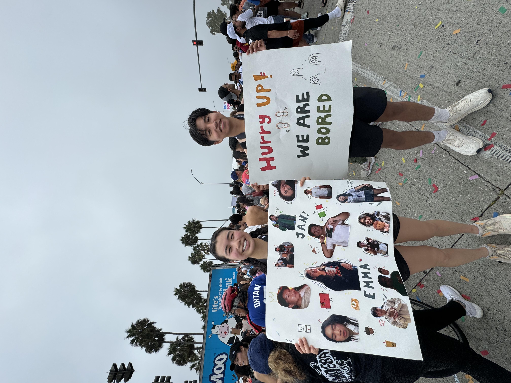
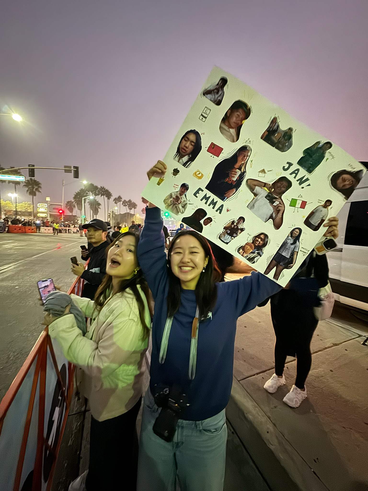

Races
Marathons & distance events I’ve run.


San Francisco 10K
This one was special because my girlfriend and I ran side by side the whole way. We were in San Francisco for the summer while I was interning, and without many friends or family around, doing this together made it feel extra good. We kept pace, finished in about an hour and ten, and left already scheming our next race.
- Course: rolling streets + cool coastal air
- Fuel: light (water only) — gel pre-start
- Shoes: (fill in)
- Next goal: stronger middle miles

Surf City Marathon
First full marathon. The entry was a 20th-birthday gift from my girlfriend, which still cracks me up. I trained hard and got under four hours. It was tough, loud, and windy along PCH, but crossing that line felt like checking off something that used to feel impossible.
- Course: out-and-back along PCH
- Fuel: gels + electrolytes every 5–6 miles
- Shoes: (fill in)
- Next goal: stronger last 10K
 



Long Beach Half Marathon
First half marathon with my friend Emma because we wanted to see what we could do. Training was messy and fun, and sneaking in under two hours felt unreal. My friends and my girlfriend showed up at 6 am to cheer—cranky but present—which made the whole morning.
- Course: flat waterfront + coastal breeze
- Fuel: gels + water at every station
- Shoes: (fill in)
- Next time: aim for a negative split